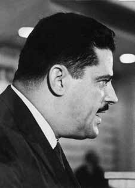

Aluízio
Palhano
Pedreira
Ferreira
CIRCUNSTÂNCIAS DA MORTE
Aluízio Palhano Pedreira Ferreira foi sequestrado por agentes da repressão no dia 9 de maio de 1971, em São Paulo (SP), pouco mais de cinco meses depois do seu retorno ao Brasil. Há indícios de que tenha sido entregue às forças de segurança pelo agente infiltrado José Anselmo dos Santos, o cabo Anselmo, intermediário de seus contatos com militantes da VPR no Brasil.
Já no ano de 1975, presos políticos denunciaram sua prisão e morte por meio de uma carta-denúncia enviada ao presidente do Conselho Federal da OAB. O documento, conhecido como “Bagulhão”, atesta que Palhano teria sido preso em 9 de maio de 1971 por agentes do DOI-CODI do II Exército e, então, levado à sede daquele órgão, onde foi barbaramente torturado. Ainda de acordo com o documento, Aluízio teria sido levado à sede do Cenimar, no Rio de Janeiro (RJ), e, no dia 15 de maio, novamente encaminhado a São Paulo, onde foi torturado ininterruptamente até o dia 20 daquele mês, quando os presos políticos não tiveram mais contato com Aluízio.
O preso político Altino Rodrigues Dantas Jr. enviou, no dia 1º de agosto de 1978, carta ao general Rodrigo Octávio Jordão Ramos, então ministro do Superior Tribunal Militar (STM), na qual relatava que tinha estado preso com Palhano no DOI-CODI II. Em seu relato, Altino afirma que, por volta do dia 16 de maio, Aluízio chegou às instalações daquele órgão, na época comandado pelo major Carlos Alberto Brilhante Ustra. O ex-preso político informa ainda que, na noite do dia 20 para o dia 21 daquele mês, por volta das 23 horas, ouviu Aluízio ser retirado de sua cela e levado para sessão de tortura. Altino pôde ouvir os gritos do torturado até por volta das 3 horas da manhã, quando se fez silêncio.
Depois, prossegue Altino, […] “fui conduzido a essa mesma sala de torturas, que estava suja de sangue mais que de costume. Perante vários torturadores, particularmente excitados naquele dia, ouvi de um deles, conhecido pelo codinome de ‘JC’ (cujo verdadeiro nome é Dirceu Gravina), a seguinte afirmação: ‘Acabamos de matar o seu amigo, agora é a sua vez’. […] Entre outros, se encontravam presentes naquele momento os seguintes agentes: ‘Dr. José’ (oficial do Exército, chefe da equipe); ‘Jacó’ (integrante da equipe, cabo da Aeronáutica); Maurício José de Freitas (‘Lunga’ ou ‘Lungaretti’, integrante dos quadros da Polícia Federal), além do já citado Dirceu Gravina ‘JC’, e outros sobre os quais não tenho referências.”
A indicação do dia 20 de maio de 1971 como provável data de morte de Aluízio Palhano presente no depoimento de Altino é reforçada pelo registro existente na Informação 4057/16 da Agência de São Paulo do SNI, que encaminhou para a Agência Central do mesmo órgão uma relação nominal de militantes acompanhada de datas que, pela análise dos casos, parecem indicar as respectivas datas de morte dos militantes listados. A Informação apresenta o nome de Aluízio acompanhado do registro “20 Mai 71 – SP”, indicando a provável data e local de morte do militante.
Inês Etienne Romeu, ex-presa política e única sobrevivente do centro clandestino conhecido como Casa da Morte de Petrópolis, denunciou em relatório apresentado ao Conselho Federal da OAB, em 18 de setembro de 1971, que Aluízio Palhano foi levado para o centro de Petrópolis no dia 13 de maio daquele ano. De acordo com o relato de Inês, Aluízio Palhano, ex-líder dos bancários do Rio de Janeiro, preso no dia 6 de maio de 1971, foi conduzido para aquela casa no dia 13 do mesmo mês onde ficou até o dia seguinte. “Não o vi pessoalmente, mas Mariano Joaquim da Silva contou-me que presenciou sua chegada, dizendo-me que seu estado físico era deplorável.”
Em depoimento à Comissão da Verdade do Estado de São Paulo Rubens Paiva, de 25 de fevereiro de 2013, o procurador da República Sérgio Suiama, um dos proponentes de denúncia feita pelo Ministério Público Federal em São Paulo (MPF-SP) contra Carlos Alberto Brilhante Ustra e Dirceu Gravina, relatou que fontes e dados levantados pelo MPF-SP corroboram as informações fornecidas por Altino e Inês, e acrescentou que documentos de arquivos públicos, tanto do estado de São Paulo quanto federais, comprovam que os órgãos de repressão monitoravam as atividades de Aluízio Palhano desde 1964.
O MPF-SP também ouviu, por ocasião da denúncia, a ex-presa política Lenira Machado, detida em 13 de maio de 1971, em São Paulo (SP), e levada ao DOICODI II, que declarou sua impressão de ter visto Aluízio nas dependências daquele órgão e que o militante foi torturado pela equipe do agente Dirceu Gravina. Altino Dantas também foi ouvido pelo MPF e confirmou que viu Aluízio em três ocasiões no DOI-CODI II. Em uma delas, Aluízio contou a Altino que havia sido levado para Petrópolis e depois trazido de volta para São Paulo. Os depoimentos dos ex-presos políticos Lenira Machado, Inês Etienne Romeu e Altino Rodrigues Dantas Jr. coincidem quanto a locais e datas relacionados às circunstâncias de desaparecimento de Aluízio Palhano. Para o MPF-SP, esses relatos e os documentos coletados comprovam a materialidade dos crimes de sequestro, tortura, morte e ocultação de cadáver cometidos contra Aluízio Palhano Pedreira Ferreira pelos agentes da repressão Carlos Alberto Brilhante Ustra e Dirceu Gravina.
Em depoimento à CNV, em 11 de novembro de 2014, uma testemunha, que solicitou que seu nome fosse mantido em sigilo, informou que Aluízio Palhano foi morto por haver se negado a colaborar com a repressão e também por ter sido reconhecido, na Casa da Morte de Petrópolis, por um concunhado, Fernando Ayres da Motta, ex-interventor de Petrópolis e frequentador daquele centro clandestino. Fernando, de acordo com a testemunha, era irmão do marido da irmã de Aluízio, Lygia Pedreira Alves da Motta. Os vínculos de parentesco foram confirmados por análise realizada pela CNV, o que permite inferir que Aluízio foi de fato levado para Petrópolis e que, ao ser reconhecido pelo concunhado, foi transferido de volta ao DOI-CODI II, onde foi morto sob tortura, possivelmente no dia 20 de maio de 1971.
Aluízio Palhano Pedreira Ferreira was kidnapped by repression agents on May 9, 1971, in São Paulo (SP), just over five months after his return to Brazil. There are indications that he was handed over to the security forces by the undercover agent José Anselmo dos Santos, Corporal Anselmo, an intermediary in his contacts with VPR militants in Brazil.
In 1975, political prisoners denounced his arrest and death through a complaint letter sent to the president of the Federal Council of the OAB. The document, known as “Bagulhão”, attests that Palhano was arrested on May 9, 1971 by DOI-CODI agents of the II Army and then taken to the headquarters of that body, where he was savagely tortured. Still according to the document, Aluízio would have been taken to the Cenimar headquarters, in Rio de Janeiro (RJ), and, on May 15th, sent again to São Paulo, where he was tortured continuously until the 20th of that month, when the political prisoners no longer had contact with Aluízio.
Political prisoner Altino Rodrigues Dantas Jr. sent, on August 1, 1978, a letter to General Rodrigo Octávio Jordão Ramos, then minister of the Superior Military Court (STM), in which he reported that he had been imprisoned with Palhano at DOI-CODI II. In his report, Altino states that, around May 16, Aluízio arrived at the facilities of that organization, at the time commanded by Major Carlos Alberto Brilhante Ustra. The former political prisoner also reports that, on the night of the 20th to the 21st of that month, around 11 pm, he heard Aluízio being taken out of his cell and taken to a torture session. Altino could hear the tortured man's screams until around 3 am, when there was silence.
Afterwards, Altino continues, [...] "I was taken to that same torture room, which was stained with blood more than usual. In front of several torturers, particularly excited that day, I heard from one of them, known by the code name 'JC' (whose real name is Dirceu Gravina), the following statement: 'We just killed your friend, now it's your turn'. [...] Among others, the following agents were present at that moment: 'Dr. José' (officer of the Army, team leader); ‘Jacó’ (team member, Air Force corporal); Maurício José de Freitas (‘Lunga’ or ‘Lungaretti’, member of the Federal Police), in addition to the aforementioned Dirceu Gravina ‘JC’, and others for whom I have no references.”
The indication of May 20, 1971 as the probable date of death of Aluízio Palhano present in Altino's testimony is reinforced by the existing record in Information 4057/16 of the São Paulo Agency of the SNI, which sent to the Central Agency of the same body a nominal list of militants accompanied by dates that, based on the analysis of the cases, seem to indicate the respective dates of death of the militants listed. The information presents the name of Aluízio accompanied by the entry “20 May 71 – SP”, indicating the likely date and place of the militant’s death.
Inês Etienne Romeu, former political prisoner and only survivor of the clandestine center known as Casa da Morte de Petrópolis, denounced in a report presented to the Federal Council of the OAB, on September 18, 1971, that Aluízio Palhano was taken to the center of Petrópolis on May 13 of that year. According to Inês' report, Aluízio Palhano, former leader of Rio de Janeiro's bank employees, arrested on May 6, 1971, was taken to that house on the 13th of the same month where he stayed until the following day. “I didn’t see him in person, but Mariano Joaquim da Silva told me that he witnessed his arrival, telling me that his physical condition was deplorable.”
In testimony to the Truth Commission of the State of São Paulo Rubens Paiva, on February 25, 2013, the public prosecutor Sérgio Suiama, one of the proponents of the complaint made by the Federal Public Ministry in São Paulo (MPF-SP) against Carlos Alberto Brilhante Ustra and Dirceu Gravina, reported that sources and data collected by the MPF-SP corroborate the information provided by Altino and Inês, and added that documents from public archives, both in the state of São Paulo and federal agencies, prove that repression bodies monitored Aluízio Palhano's activities since 1964.
The MPF-SP also heard, on the occasion of the complaint, former political prisoner Lenira Machado, arrested on May 13, 1971, in São Paulo (SP), and taken to DOICODI II, who declared her impression of having seen Aluízio on the premises of that institution and that the militant was tortured by agent Dirceu Gravina's team. Altino Dantas was also heard by the MPF and confirmed that he saw Aluízio on three occasions at DOI-CODI II. In one of them, Aluízio told Altino that he had been taken to Petrópolis and then brought back to São Paulo. The testimonies of former political prisoners Lenira Machado, Inês Etienne Romeu and Altino Rodrigues Dantas Jr. coincide in terms of places and dates related to the circumstances of Aluízio Palhano's disappearance. For the MPF-SP, these reports and the documents collected prove the materiality of the crimes of kidnapping, torture, death and concealment of a corpse committed against Aluízio Palhano Pedreira Ferreira by repression agents Carlos Alberto Brilhante Ustra and Dirceu Gravina.
In a statement to the CNV, on November 11, 2014, a witness, who requested that his name be kept confidential, reported that Aluízio Palhano was killed because he refused to collaborate with the repression and also because he was recognized, at the House of Death in Petrópolis, by a brother-in-law, Fernando Ayres da Motta, former interventor of Petrópolis and frequenter of that clandestine center. Fernando, according to the witness, was the brother of the husband of Aluízio's sister, Lygia Pedreira Alves da Motta. The kinship ties were confirmed by analysis carried out by the CNV, which allows us to infer that Aluízio was in fact taken to Petrópolis and that, upon being recognized by his brother-in-law, he was transferred back to DOI-CODI II, where he was killed under torture, possibly on May 20, 1971.
Aluízio Palhano Pedreira Ferreira fue secuestrado por agentes de la represión el 9 de mayo de 1971, en São Paulo (SP), poco más de cinco meses después de su regreso a Brasil. Hay indicios de que fue entregado a las fuerzas de seguridad por el agente encubierto José Anselmo dos Santos, cabo Anselmo, intermediario en sus contactos con militantes del VPR en Brasil.
En 1975, presos políticos denunciaron su detención y muerte a través de una carta de denuncia enviada al presidente del Consejo Federal de la OAB. El documento, conocido como “Bagulhão”, acredita que Palhano fue detenido el 9 de mayo de 1971 por agentes del DOI-CODI del II Ejército y luego conducido a la sede de ese organismo, donde fue salvajemente torturado. Aún según el documento, Aluízio habría sido llevado a la sede de Cenimar, en Río de Janeiro (RJ), y, el 15 de mayo, enviado nuevamente a São Paulo, donde fue torturado continuamente hasta el 20 de ese mes, cuando los presos políticos ya no tuvieron contacto con Aluízio.
El preso político Altino Rodrigues Dantas Jr. envió, el 1 de agosto de 1978, una carta al general Rodrigo Octávio Jordão Ramos, entonces ministro del Tribunal Superior Militar (STM), en la que informaba que había estado preso con Palhano en el DOI-CODI II. En su informe, Altino afirma que, alrededor del 16 de mayo, Aluízio llegó a las instalaciones de esa organización, en ese momento comandada por el mayor Carlos Alberto Brilhante Ustra. El ex preso político también relata que, en la noche del 20 al 21 de ese mes, alrededor de las 23 horas, escuchó cómo sacaban a Aluízio de su celda y lo llevaban a una sesión de tortura. Altino pudo escuchar los gritos del hombre torturado hasta alrededor de las 3 de la madrugada, cuando se hizo el silencio.
Después, continúa Altino, [...] "Me llevaron a esa misma sala de torturas, que estaba manchada de sangre más de lo habitual. Frente a varios torturadores, especialmente excitados ese día, escuché de uno de ellos, conocido con el nombre en clave 'JC' (cuyo nombre real es Dirceu Gravina), la siguiente declaración: 'Acabamos de matar a tu amigo, ahora te toca a ti'. [...] Entre otros, en ese momento estaban presentes los siguientes agentes: 'Dr. José' (oficial del Ejército, jefe del equipo); ‘Jacó’ (miembro del equipo, cabo de la Fuerza Aérea); Maurício José de Freitas (‘Lunga’ o ‘Lungaretti’, miembro de la Policía Federal), además del mencionado Dirceu Gravina ‘JC’, y otros de los cuales no tengo referencias”.
La indicación del 20 de mayo de 1971 como fecha probable de muerte de Aluízio Palhano presente en el testimonio de Altino se ve reforzada por el registro existente en Información 4057/16 de la Agencia São Paulo del SNI, que envió a la Agencia Central del mismo organismo una lista nominal de militantes acompañada de fechas que, con base en el análisis de los casos, parecen indicar las respectivas fechas de muerte de los militantes enumerados. La información presenta el nombre de Aluízio acompañado de la inscripción “20 de mayo 71 – SP”, indicando la fecha y lugar probable de la muerte del militante.
Inês Etienne Romeu, ex presa política y única superviviente del centro clandestino conocido como Casa da Morte de Petrópolis, denunció en un informe presentado al Consejo Federal de la OAB, el 18 de septiembre de 1971, que Aluízio Palhano fue llevado al centro de Petrópolis el 13 de mayo de ese año. Según el relato de Inês, Aluízio Palhano, ex líder de los empleados bancarios de Río de Janeiro, detenido el 6 de mayo de 1971, fue llevado a esa casa el 13 del mismo mes, donde permaneció hasta el día siguiente. “No lo vi personalmente, pero Mariano Joaquim da Silva me dijo que presenció su llegada, diciéndome que su estado físico era deplorable”.
En testimonio ante la Comisión de la Verdad del Estado de São Paulo Rubens Paiva, el 25 de febrero de 2013, el fiscal Sérgio Suiama, uno de los proponentes de la denuncia presentada por el Ministerio Público Federal de São Paulo (MPF-SP) contra Carlos Alberto Brilhante Ustra y Dirceu Gravina, informó que fuentes y datos recopilados por el MPF-SP corroboran las informaciones proporcionadas por Altino e Inês, y agregó que documentos de archivos públicos, ambos del estado de São Paulo y de agencias federales, prueban que los órganos de represión vigilaban las actividades de Aluízio Palhano desde 1964.
El MPF-SP también escuchó, con motivo de la denuncia, a la ex presa política Lenira Machado, detenida el 13 de mayo de 1971, en São Paulo (SP), y trasladada al DOICODI II, quien declaró su impresión de haber visto a Aluízio en las instalaciones de esa institución y que el militante fue torturado por el equipo del agente Dirceu Gravina. Altino Dantas también fue escuchado por el MPF y confirmó que vio a Aluízio en tres ocasiones en el DOI-CODI II. En uno de ellos, Aluízio le dijo a Altino que lo habían llevado a Petrópolis y luego devuelto a São Paulo. Los testimonios de los ex presos políticos Lenira Machado, Inês Etienne Romeu y Altino Rodrigues Dantas Jr. coinciden en lugares y fechas relacionadas con las circunstancias de la desaparición de Aluízio Palhano. Para el MPF-SP, estos informes y los documentos recabados prueban la materialidad de los delitos de secuestro, tortura, muerte y ocultación de cadáver cometidos contra Aluízio Palhano Pedreira Ferreira por los agentes de represión Carlos Alberto Brilhante Ustra y Dirceu Gravina.
En declaración a la CNV, el 11 de noviembre de 2014, un testigo, que pidió reserva de su nombre, informó que Aluízio Palhano fue asesinado porque se negó a colaborar con la represión y también porque fue reconocido, en la Casa de la Muerte en Petrópolis, por un cuñado, Fernando Ayres da Motta, ex interventor de Petrópolis y frecuentador de ese centro clandestino. Fernando, según el testigo, era hermano del marido de la hermana de Aluízio, Lygia Pedreira Alves da Motta. Los vínculos de parentesco fueron confirmados por análisis realizados por la CNV, lo que permite inferir que Aluízio efectivamente fue llevado a Petrópolis y que, al ser reconocido por su cuñado, fue trasladado nuevamente al DOI-CODI II, donde fue asesinado bajo tortura, posiblemente el 20 de mayo de 1971.